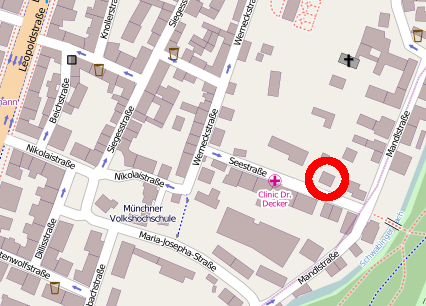

Practical Info
The Munich Center for Mathematical Philosophy is dedicated to a harassment-free conference experience for everyone as described in our Code of Conduct.
Venue and accomodation

The conference will take place in the mansion of the Center for Advanced Studies, Seestraße 13,
80802 München (see the map on the right).
OpenStreetMap (best option for printouts)
Nearby subway stations are Giselastraße and Münchner Freiheit (U3, U6), the nearest bus station is Thiemestraße (lines 54, 154).
Travel
- If you arrive by air at Munich Airport, the easiest way into the city is by S-Bahn. Take S1 or S8 in the basement of Terminal 1 and get down-town in approximately 40 minutes. Tickets must be purchased at the ticket machines (ground floor near the escalators to the S-Bahn station). If you travel alone, you might want to buy an adult single day ticket (all zones) - if you are a group of two or more (up to five), you should buy an adult partner ticket (all zones). Tickets must be validated (stamped) before entering the trains.
- If you get to Munich by train, you can choose to buy either a single ride ticket, a day ticket, or a partner day ticket (for groups up to five) - or even three-day versions of these. Munich main station and LMU are located in the inner district, so "Innenraum" tickets are sufficient for getting from the train to the conference venue. For more info visit www.mvv-muenchen.de.
About Munich
The official website of the city of Munich is www.muenchen.de, where you find information about the cultural life in Munich and a link to the tourist information. Here are some more links that might be useful.
- the Munich tourist office - online and with opening hours
- the official hotel booking service of the Munich tourist office
- general information about finding your way around Munich on the Transport Portal
- Munich sights, some suggestions
- the Wikitravel entry about Munich
- and the Wikipedia entry about Munich, for the sake of completeness
Restaurants
More soon. Please stay tuned.